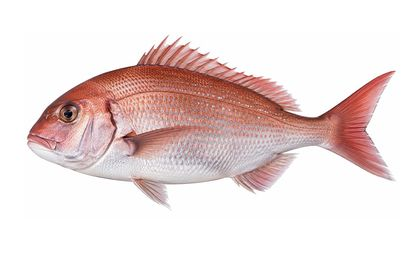
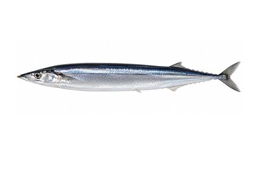
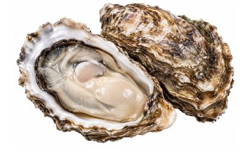

2026-10-27
ดูอย่างไรว่าปลาสด
เวลาที่หน้าร้านมักมีไม่มาก ถ้าจำไว้ว่าต้องดูสามจุด ก็ตัดสินใจได้ไม่ยาก

คนที่จับปลาทุกวันดูออกในไม่กี่วินาที ไม่ใช่เรื่องยาก เพียงแต่เขารู้ว่าต้องดูตรงไหน
หนึ่ง ดวงตา
ตาดำควรชัด ตาขาวควรใส เมื่อเวลาผ่านไปจะขุ่นขาวแล้วค่อย ๆ ยุบลง แต่ระวังไว้ว่าน้ำแข็งอาจทำให้ตาแดงได้โดยที่ปลายังสด
สอง เหงือก
เปิดฝาเหงือกดู ข้างในควรเป็นสีแดงสด ถ้าออกน้ำตาลหรือเทาแปลว่าผ่านเวลามาแล้ว จุดนี้เชื่อถือได้ที่สุดเมื่อยืนอยู่หน้าร้าน
สาม ความตึงของตัวปลา
จับแล้วเนื้อควรแน่น หางไม่ตก ถ้าท้องนิ่มแปลว่าเครื่องในเริ่มเสีย เกล็ดที่ติดแน่นและเมือกบนผิวที่ใสไม่ขุ่น ก็เป็นสัญญาณที่ดี
ถ้าซื้อเป็นชิ้น
ขอบรอยตัดควรคมไม่มน หลีกเลี่ยงแพ็กที่มีน้ำสีแดงขังอยู่ ปลาเนื้อแดงจะคล้ำลงเมื่อเก็บไว้นาน ส่วนปลาเนื้อขาวจะเสียความใส
หอยต้องปิดฝา
หอยที่ยังมีชีวิตจะหุบเมื่อถูกแตะ ถ้าอ้าอยู่และไม่ขยับแปลว่าตายแล้ว ของที่ขายทั้งเปลือกอย่างหอยนางรม ให้เลือกตัวที่รู้สึกหนักเมื่อเทียบกับขนาด
วัตถุดิบที่กล่าวถึง
 ปลาอาจิ (ปลาทูแขกญี่ปุ่น)พ.ค.–ก.ค.
ปลาอาจิ (ปลาทูแขกญี่ปุ่น)พ.ค.–ก.ค.

ปลาไท (ปลากะพงแดงญี่ปุ่น)มี.ค.–พ.ค.
ปลาซันมะก.ย.–ต.ค.
หอยนางรมญี่ปุ่นพ.ย.–ก.พ.